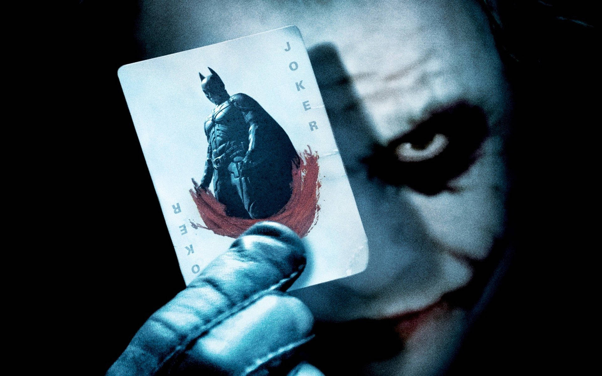

Een andere reden dat de film zo goed is, is het heel goed projecteren van wie Batman is en zijn karakter, er zijn veel films over hem gemaakt maar ik vind geen een zo goed Batmans persoonlijkheid laten zien.
Een andere reden dat de film zo goed is, is het heel goed projecteren van wie Batman is en zijn karakter, er zijn veel films over hem gemaakt maar ik vind geen een zo goed Batmans persoonlijkheid laten zien.The Dark Knight is een actie-film gebaseerd op Batman. Hij vecht tegen verschillende vijanden, maar de beroemdste is 'the Joker'. Dit is een clown die banken oervalt voor de lol, mensen vermoord zonder na te denken en hij is onvoorspelbaar. In deze film gaat Batman proberen The Joker te verslaan.
 Deze film is zo fantastisch door de geweldige actie-scenes en de perfecte introductie tot The Joker. Het begint namelijk met een scene waar hij gelijk begint met een bank overvallen op een slimme manier om zoveel mogelijk geld voor zichzelf over te houden.
Een andere reden dat de film zo goed is, is het heel goed projecteren van wie Batman is en zijn karakter, er zijn veel films over hem gemaakt maar ik vind geen een zo goed Batmans persoonlijkheid laten zien.
Hieronder heb ik 2 van de belangrijkste helden uitgelegd.